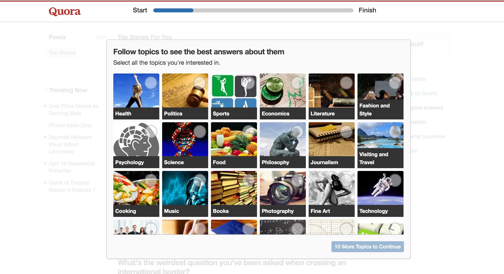
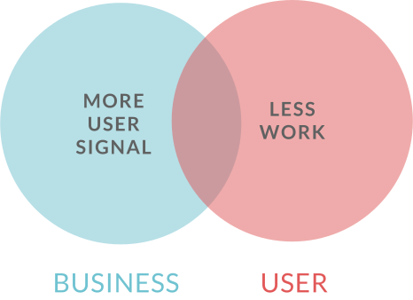
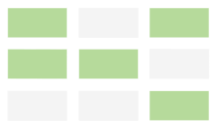

New User Experience
As of March 2016, Quora had 100 million monthly unique visitors to the
website. With this amount of growth, it is important for the company
to convert more visitors into happy, retained users.
Since I joined Quora, I was drawn to improving the New User Experience
(NUX). I started with running many small experiments to understand the
space. Eventually, I fully assumed the responsibility to improve NUX.
I felt that the design quality was not on par with the rest of the
product, and was not receiving as much attention as it deserves.
Old NUX
Follow Topics

Follow Topics
When users sign up, they want to read great content right away. Some
users felt that Quora was putting unnecessary work between them and
the content. However at this point in time, Quora needed to get
explicit signal on what users liked to read. Therefore, we had to keep
the step.

I explored the problem further by conducting research via user
interviews, workships, and brainstorms. Although we had to keep the
step, it did not mean that they had to be as painful as they were to
our users. The research boiled down to two main problems.
Problem 1
Users perceived the product as untrustworthy due to the low
design quality and product transparency.
Problem 2
Users felt forced to work in order to see content, without
an understanding of why they should sign up.
I took the problems and transformed them into goals and principles to
inform the redesign and experiments to come.
Problem 1
Users perceived the product as untrustworthy due to the low
design quality and product transparency.
Problem 2
Users felt forced to work in order to see content, without
an understanding of why they should sign up.
Retention +
User Signal +
Brand +
Engagement +
User Signal +
Completion Rate +
Our qualitative goals had to be measured using metrics and user
feedback. I worked with the project manager to determine which metrics
to use as a proxy for measuring success. We anticipated a big gain in
brand, which is often an improvement that usually takes time to take
effect.
I designed a new concept to achieve a more trustworthy and simple NUX.
Clear Navigation
Users now have a clearer understanding of the signup process
Fewer Choices
Users have to pick from only a few topics at signup

Simpler wording
Users can parse short and concise language faster and more easily